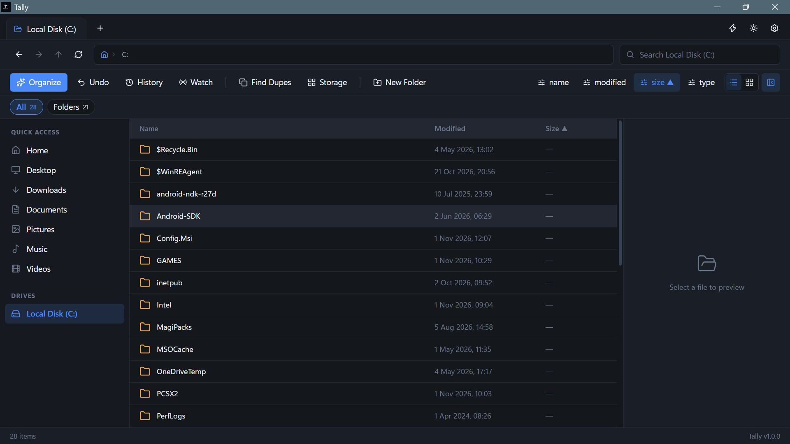

A tidy place for everything
Scan your personal folders and subfolders, review every source and destination, then approve moves one destination group at a time.
Tally is a safe file organizer for Windows. Organize personal folders, preview and approve every move, find duplicates, and undo changes when needed.
Windows 10 and later · Free to download
A little more order
Useful tools for the everyday pile-up. No mystery moves, no drama.
Scan your personal folders and subfolders, review every source and destination, then approve moves one destination group at a time.
No whole-drive scan, protected project and system folders stay untouched, and you approve each group before anything moves.
Spot identical files by content and review them without losing a thing.
Browse folders, check storage, batch rename, and keep an eye on folders you choose.
At home on your desktop
Browse your folders, find a file, or tidy things up — all from one calm, clear workspace.
A little easier on the eyes after hours.

Ready when you are
Give your files a fresh start.
Get Tally for Windows View all releases